Магазин расходников для японских авто на OpenCart. Своя тема, каталог на 444 позиции, подбор детали по артикулу, OEM-номеру и коду двигателя.
Витрина
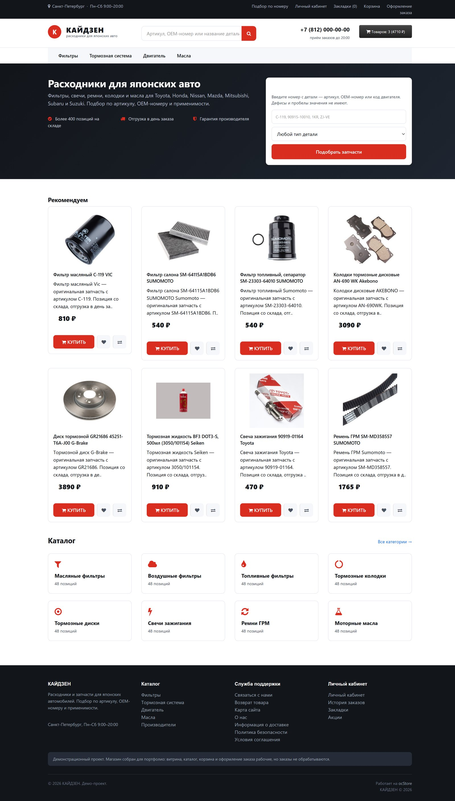
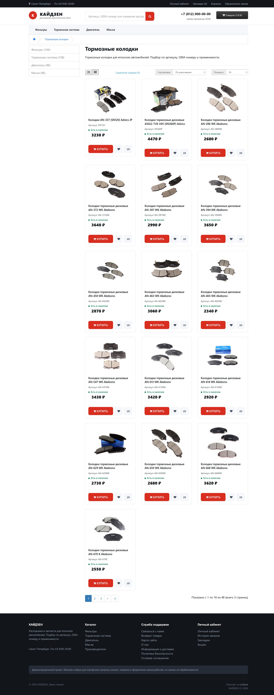
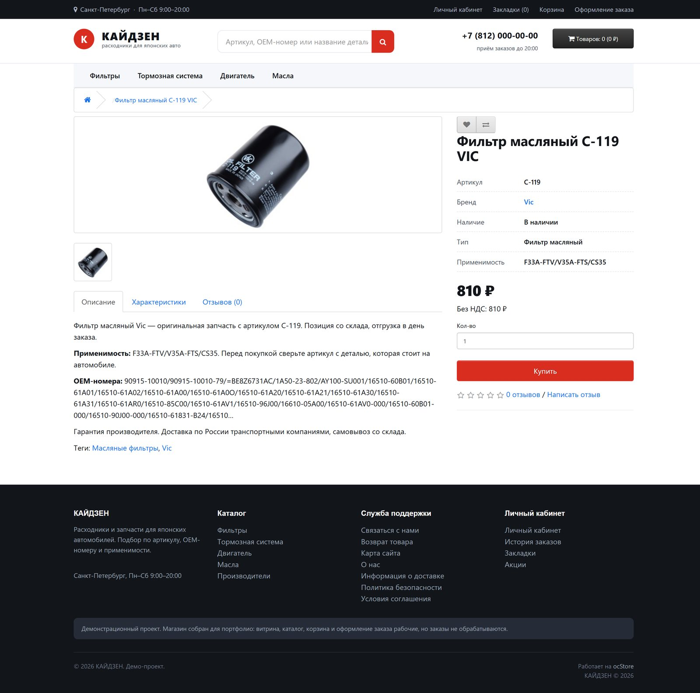
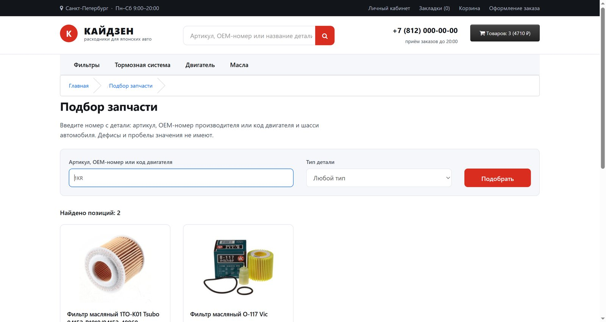
1KR. Ищет также по артикулу и OEM-номеру,
дефисы и пробелы значения не имеют.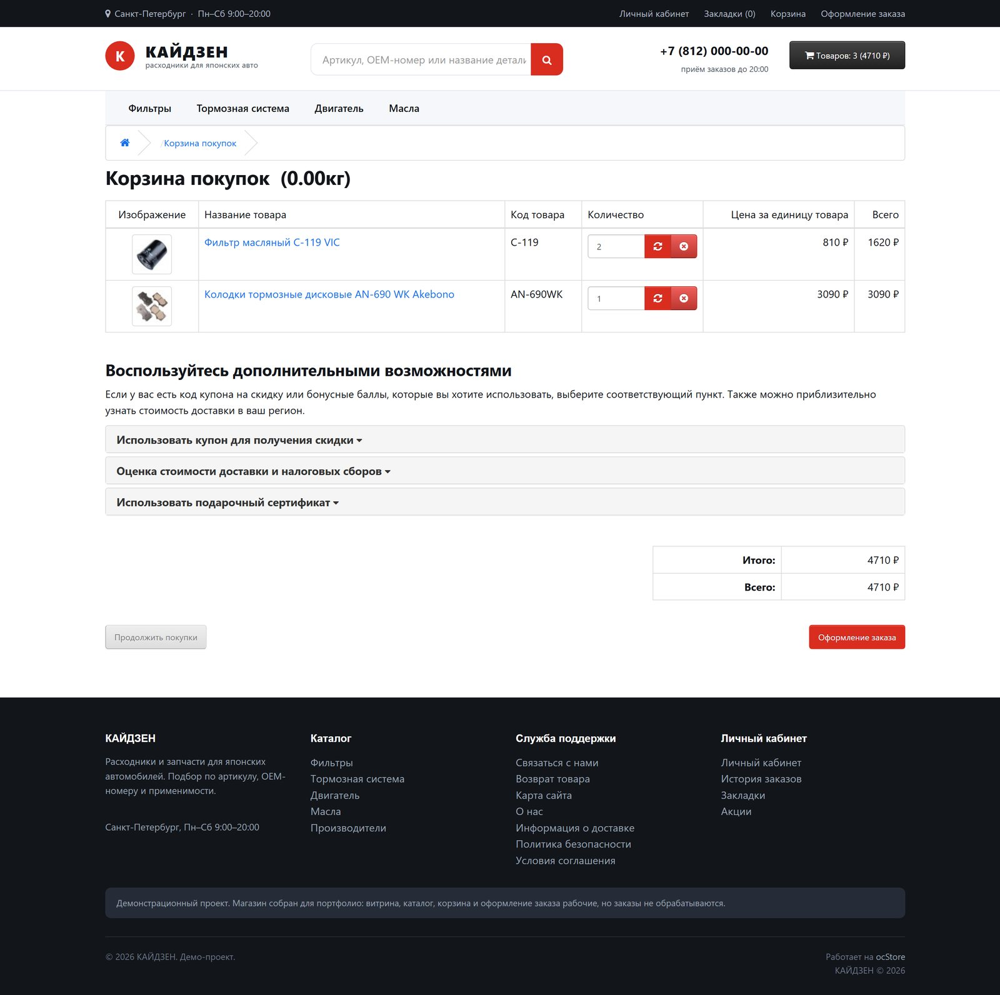
Панель управления
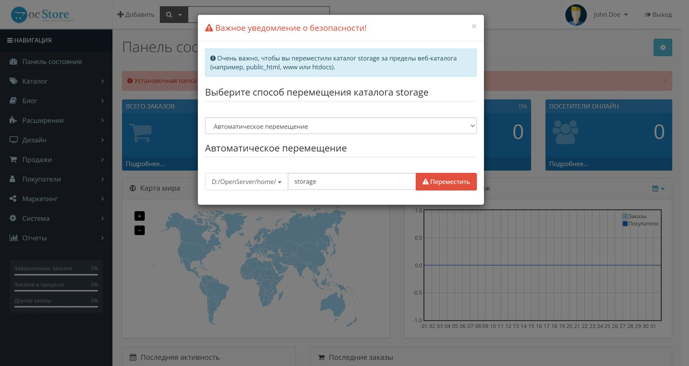
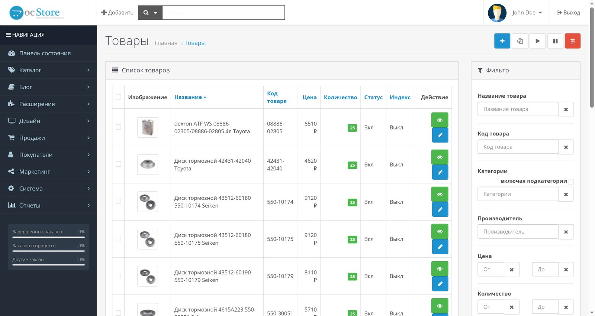
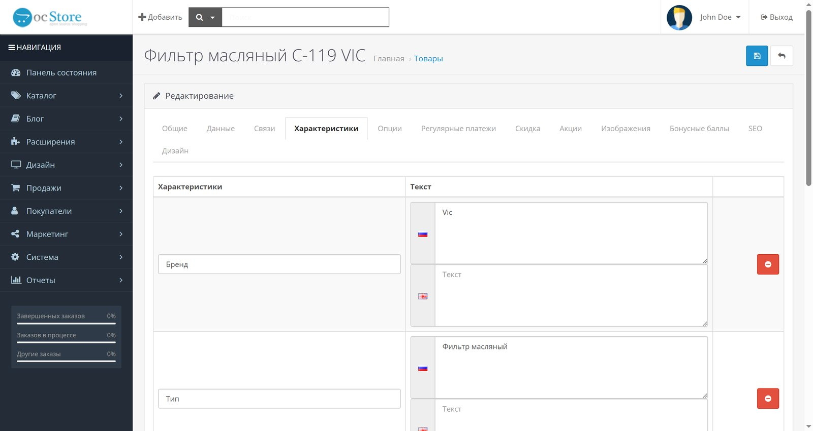
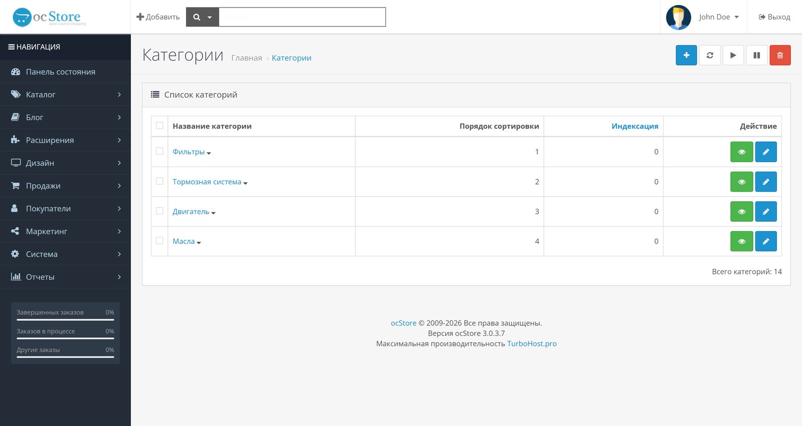
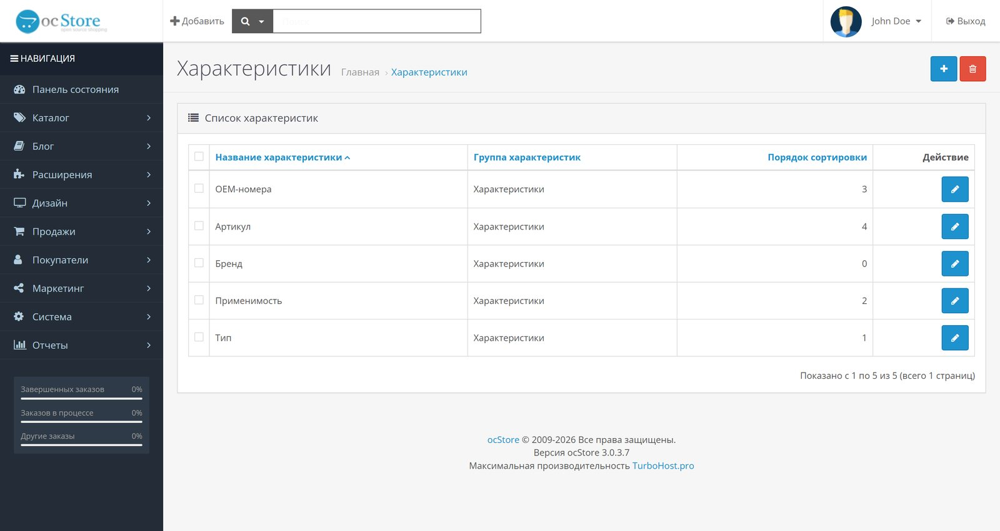
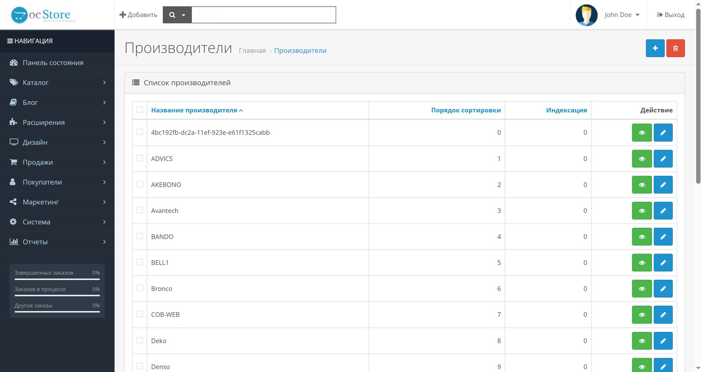
mod_rewrite — нужен для ЧПУ90915-10010 и 9091510010 дают один результат).
Штатный поиск OpenCart ищет по названию и на такие запросы не отвечает.3230 ₽./tormoznye-kolodki.Sitemap
в robots.txt. Из коробки карта не работает — расширение
нужно включать вручную.Product с ценой, наличием
и артикулом, BreadcrumbList, ItemList в категориях,
Store и WebSite на главной. Штатный OpenCart 3
разметку не отдаёт вообще — за счёт неё в выдачу попадают цена
и наличие прямо в сниппете.noindex названо обратно своему смыслу: в админке это
«Индексация», и движок закрывает страницу от поисковиков при значении 0,
а не 1. При массовой заливке каталога легко закрыть весь магазин
от Яндекса и Google, не заметив этого — страницы открываются, ошибок нет,
трафика просто не будет. Проверяется одной строкой:
curl -s <адрес> | grep robots.
1KR/K3/1NR, ZJ-VE), а не парой марка-модель, и такой
селектор возвращал бы пустоту почти на любой выбор — для него нужен отдельный
справочник применимости. ocStore 3.0.3.7 работает на Twig 2, ветка снята
с поддержки и имеет известные уязвимости: при боевом запуске это проговаривается
с заказчиком до старта. Почта и платёжные шлюзы не подключались, заказы
не обрабатываются.